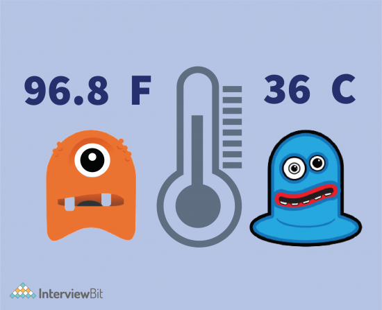

My Projects

It will involve validation of the user input, using the dropdown menu to know if the input is celsius or Fahrenheit. You can add more functionality to it.
It will involve validation of the user input, using the dropdown menu to know if the input is celsius or Fahrenheit. You can add more functionality to it.
Skills Required - Input Validation, Form designing, HTML, CSS, JavaScript
WEATHER DETECTOR
This intermediate project is a great way to level up your HTML, CSS, and JavaScript skills to create a fully functional weather app that allows users to search for weather conditions and forecast information in any location around the world. To do this, you’ll be integrating with a weather API like OpenWeatherMap and then polling this service to fetch and display data within your app. API integration is a foundational skill for web dev pros, making this project a great way for you to hone these skills.